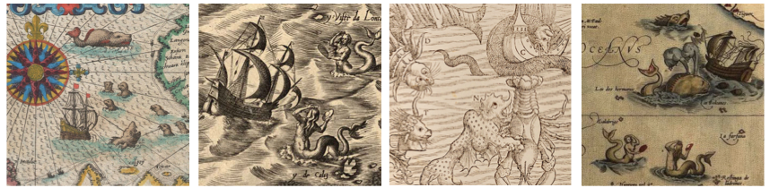

Overview
The genomes of Metazoan organisms are packed with dense layers of information. For this reason, genome annotation is a challenging, long-term endeavour.
Consequently, most published genome sequences are comprised of DNA that is incompletely understood in terms of its evolutionary origins and functional significance.
An exciting aspect of this is that Identifying and characterising the features hidden within this ‘dark genome’ can often reveal useful insights into the biology and evolution of genomes.
These days, a great deal can be discovered simply by examining genomes "in silico" - in other words, by analysing genome sequence data using a computer. While experimental studies are required to characterise genome features at a functional level, comparative sequence analysis can provide insights into how genomes have evolved. These insights can inform the development of hypotheses, and the design of experiments to test them.
Sequence similarity searches, like those implemented in the basic local alignment search tool (BLAST) program, are extremely useful devices for investigating genomes in silico.
Difficult to overstate just how useful these are.
Using similarity search tools and strategically chosen reference datasets, poorly mapped parts of the genomic landscape can be explored and described in ways that provide insights into genome biology and evolutionary history.
"As more scientists come to rely on genome annotation, it will become more important for the scientific community as a whole to contribute to this continuing process." - Lincoln Stein
These searches can be deployed to investigate genome features have not previously been annotated, or have only been incompletely characterised.
The genome sequences of most species are a largely unexplored wilderness of decayed genes, transposons, and non-coding DNA elements. These sequences, even when non-functional, contain a wealth of useful biological information. Because similarity searches function independently of annotations, they are extremely useful for this 'unexplored land'.
The genome's buried treasure
Progress in genomics has underlined the dynamic nature of genomes, which can not only diverge through macrogenomic processes such as chromosomal rearrangements and karyotype evolution, but also through the activity of transposable elements, and the incorporation of horizontally transferred genetic material.
Consequently, most published genome sequences are incompletely annotated. One of the things that makes genome annotation challenging, is that much of the useful information is obscured, making it difficult to extract. There are a number of processes that contribute to this:
(i) Evolutionary dynamism: as genomes evolve, new genes arise through a variety of processes, including segmental duplication, retrotransposition, and gene fusion. Whereas some genes undergo relatively measured change under natural selection, others evolve according to selective forces that favor diversification.
For example, genes with antiviral functions evolve under powerful selective forces (known as Red Queen dynamics) driven by competition with viral parasites. The dynamics can strongly favor divergence and diversification.
Whereas much of the evolutionary dynamism of the genomes is driven by competition with parasites in the external environment, another driver is the struggle to suppress intragenomic parasites - such as the various transposable elements that infest eukaryotic genomes.
For example, mammalian genomes contain an army of genes encoding KRAB zinc finger proteins (KZFPs), that specifically target transposable elements for epigenetic silencing.
The point is this generates a lot of 'churn'. A lot of information that is created as part of the story is embedded in decayed sequences. Or else it can be hidden in the way that mobile element sequences are distributed throughout species genomes. Since there is a temporal dimension to element activity, there is information there that be part of the unpicking of the puzzle.
Similar processes operate on genomes, which are partly shaped by mutational decay of redundant information.)
(ii) Erosion: a by-product of evolutionary dynamism is reduncancy, and redundant genes decay, being gradually eroded and fragmented by substitutions, insertions, and genomic rearrangements. The degenerated molecular sequences of previously functional genes are called ‘pseudogenes’.
Bryce Canyon: Geological structures show the impact of erosion over macroevolutionary time scales.
Pseudogenes can contain useful information about the evolution of genes and genomes, and for this reason are worth annotating. For example, online resources such as pseudogene.org that focus specifically on pseudogene annotations.
Nonetheless, it's probably fair to say that pseudogenes are somewhat down the list of priorities when it comes to genome annotation. Furthermore, some will inevitably difficult to recognise if they are very old, particularly if they bear little similarity to contemporary functional genes.
(iii) Overwriting: another way of thinking about the hidden information in the genome is through comparison to palimpsests - manuscript pages used in archaeology that have been written on more than once, with earlier writing incompletely erased. Its important not to take this metaphor too far, but there is a similarity in the way that information can be layered.
Another way of thinking about the hidden information in the genome is through comparison to palimpsests - manuscript pages used in archaeology that have been written on more than once, with earlier writing incompletely erased.
Of course, it is important not to take this metaphor too far, but there is a similarity in the way that information can be layered.
(ii) Horizontal transfer:
Horizontal acquisition of genes from TEs, viruses and bacteria. Sequences that have arisen through horizontal transmission have an unpredictable distribution across genomes. This is one reason why they are frequently not captured by automated annotation. Other factors include the fact that many are highly degraded pseudogenes.
Exploring genomes *in silico*
There's a lot of interesting and poorly characterised stuff out there in public sequence databases.
Much like a web search engine, BLAST can be used to monitor and explore an unstable data source – the expanding pool of molecular sequence data represented in genome sequence databases.
Indeed, similarity searches can be used to perform the further characterization of sequences retrieved via BLAST. For example, BLAST can be used to detect specific sequence features at protein or nucleic acid level (e.g. inversions, repeats, conserved protein motifs, oligonucleotide primer sites). BLAST is also a useful tool for performing rapid genotyping of sequences, and for generating alignments, particularly when the sequences being aligned have heterogeneous structures.
I confess to having spent a great deal of time just using BLAST to sift around in molecular sequence databases - probably more time than I care to account for, truth be told. Personally, I find I am easily drawn in when these kinds of loose, exploratory investigations seem like they are uncovering new and exciting information...
 Siren song: there are a variety of ways in which similarity search-based investigations can go awry.
Siren song: there are a variety of ways in which similarity search-based investigations can go awry.

I say 'seem like' because this kind of loose, heuristic approach to surveying genomes involves exploring a lot of speculative ideas, many of which (if not most) turn out to be unproductive flights of fancy.
Beyond the pitfalls of overactive imagination, there are more prosaic challenges to overcome. Simply put - there's an awful lot of molecular sequence data out there. Screening this efficiently can be less than straightforward.
It can be worthwhile overcoming these challenges though, because sometimes similarity search-based investigations lead directly to something interesting and informative - like an unexpected endogenous virus
To facilitate efficient heuristic, similarity search-based investigations, we developed an approach called database-integrated genome screening (DIGS), in which the output of similarity searches is captured in a relational database.
In this blog post, I explain the rationale behind the DIGS approach, illustrating how it can be applied with examples from my own research. More broadly though, I want to try and illustrate how interesting information can be extracted from published sequence data using only simple, publicly available tools, and comparative approaches.
Researchers need tools for exploring sequence databases independently of annotations. Sequence databases can be explored by using similarity searches to systematically screen for sequences of interest. In database-integrated genome-screening (DIGS), the output of sequence similarity search-based genome 'screens' is captured in a relational database. This facilitates the implementation of automated screens that can be performed on a large scale. In addition, it allows for the interrogation and manipulation of output data using structured query language (SQL), and provides all the benefits of a relational database management system (RDBMS) with respect to features such as data recoverability, multi-user support and network access.
It's extremely easy to get going with this, because there are so many excellent online tools for the job, and so much publicly available data. Obviously, you first need to decide what genomic 'thing' you want to start investigating.
In my case, these tend to be endogenous viral elements (EVEs), but it might be a gene family, for example, or a particular type of non-coding sequence.
BLAST searches are targeted against specific databases BLAST lets you confine searches to a specific taxonomic group (for example, viruses). It also allows you to selectively exclude certain groups. Simply by tweaking these parameters it is possible to gain a great
There is a sense of excitement that comes from seeing the evolutionary processed laid out - BLAST searches reflect phylogenetic history. It is a very tangible way of connecting with the evolutionary history.
Sequence data are constantly accumulating (in fact, the rate of data accumulation is accelerating exponentially). Thus screens frequently warrant repeating, and as databases expand, they become increasingly computationally demanding.
In a typical DIGS workflow, a screen is performed, and sequences recovered via screening are then further characterized in line with the objectives of the investigation, and the framework is updated accordingly. The overall procedure can henceforth be adjusted and reiterated as required. A basic DIGS procedure may also be elaborated, both by incorporating additional information into ancillary database tables (e.g. describing characteristics of the species whose genomes are being screened, or of the reference sequences being used in screening), and by incorporating project specific analyses in the characterization step.
Beyond surveying distribution and diversity, what else can we do to investigate evolution. There are no hard and fast rules, really. Its kind of a case of taking cues where possible.
To address this need, we developed an approach called database-integrated genome screening (DIGS), in which a relational database is used to capture and analyse the output of similarity search-based screens. This facilitates the implementation of automated screens that can be performed on a large scale, and provides a flexible, well-established framework for interrogating and manipulating the data they produce.
In database-integrated genome-screening (DIGS), the output of sequence similarity search-based genome 'screens' is captured in a relational database. This facilitates the implementation of automated screens that can be performed on a large scale. In addition, it allows for the interrogation and manipulation of output data using structured query language (SQL), and provides all the benefits of a relational database management system (RDBMS) with respect to features such as data recoverability, multi-user support and network access.